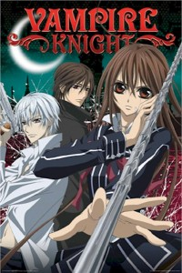
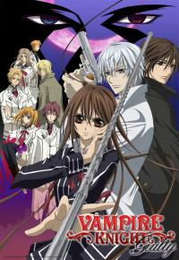

Vampire Knight
 The elite Cross Academy provides two separate classes: the Day Class and the Night Class. Yuuki Cross and Zero Kiryuu, as prefects, serve to keep the order when the gorgeous students of the Night Class start their schooling. The Day Class students make this a tiring job; however, the job is not necessary because the Night Class students are vampires. Yuuki and Zero's real objective is to protect the Night Class' secret as well as ensure the safety of the Day Class.
Guilty
Zero is back! Yuuki is relieved, but is Zero really okay? Unbeknowst to her, he has been having strange visions since he drank Kaname's blood. Seeking to find the reason behind these visions, he goes to Maria Kurenai who gives him a vague answer as to who the real villian could be. Meanwhile, Zero is facing punishment from the Supreme Vampire Council for killing a pureblood.